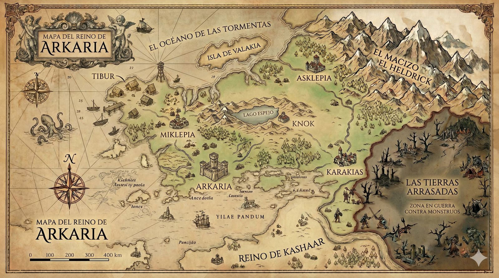

19 Jun 2026
Parte I de BARDO, cerrada
Diez capítulos y un prólogo, revisados de arriba abajo. El copero ya tiene su año entero. Ahora empieza la Academia.
Autor · Fantasía oscura
Música que es magia e instituciones que sonríen mientras aprietan. Un universo de fantasía oscura escrito con oído y mala leche.
Baja para entrarBajo la piel del mundo discurre la Umbra: una conjunción de planos paralelos al nuestro que, de cuando en cuando, lo rozan y dejan pasar lo que no debería. Cada saga abre una puerta distinta al mismo abismo. (Texto provisional: edítalo a tu gusto.)
«La belleza llega siempre con barro en los bajos.»
En la ciudad portuaria de Tibur, un copero huérfano descubre que su voz abre puertas que ningún cuchillo alcanza. Lo que no sabe es que alguien lleva tiempo escuchando — y que los músicos que tocan en las cenas de los nobles no siempre vienen solo a tocar.
Tres voluntades, una casa que se niega a morir y flores que se marchitan antes de abrirse. (Sinopsis provisional: cámbiala.)

El Reino de Arkaria, sus costas y las Tierras Arrasadas. Mapa provisional — pronto, explorable: ciudades, rutas y la herida de la Umbra, capa a capa.
Explorar el mapa interactivo →Diez capítulos y un prólogo, revisados de arriba abajo. El copero ya tiene su año entero. Ahora empieza la Academia.
Un capítulo terminado, un relato, una decisión de mundo. Borra esta entrada de ejemplo cuando tengas las tuyas.